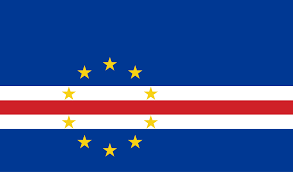

My name is Jose and I live in Cabo Verde. I am currently studying web development and enjoy learning new things. I love music, travel, and technology. I also value time with family and exploring different cultures.
Mindelo, Cape Verde

Official Flag of Cape Verde
Mindelo is a vibrant coastal city on São Vicente Island. It’s known for its welcoming people, cultural richness, and the annual Carnival celebration.